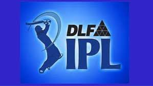

DLF IPL 2009

*Winner: Deccan Chargers

*Team Squad: (Captain - Adam Gilchrist)
(Click the above pic for viewing the Highlights of the IPL Final 2009)
Adam Gilchrist, Azhar Bilakhia, Halhadar Das, Herschelle Gibbs, Ryan Harris, Doddapaneni Kalyankrishna, Pragyan Ojha, Sarvesh Kumar, Shoaib Ahmed, RP Singh, Scott Styris, Andrew Symonds,
Venugopal Rao, Arjun Yadav, Abhinav Kumar, Manvinder Bisla, Fidel Edwards, Harmeet Singh, Jaskaran Singh, VVS Laxman, Dwaraka Ravi Teja, Rohit Sharma, Chamara Silva, Dwayne Smith,
Tirumalsetti Suman, Chaminda Vaas, Paidikalva Vijaykumar, Nuwan Zoysa
*Runner ups: Royal Challengers Bangalore